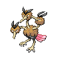

Назад
Додуо
Додуо — Покемон 1 поколения под номером 84 в Покедекс. Обитает он в регионе Канто и относится к Нормальный и Летающий типу. Две головы Додуо никогда не спят в одно и то же время. Одна голова этого Покемона бодрствует, выслеживая противников, а вторая может спокойно отдохнуть от очередной смены.
Тип:
Нормальный
Летающий
Эволюция
# 084 Додуо
=>

# 085 Додрио